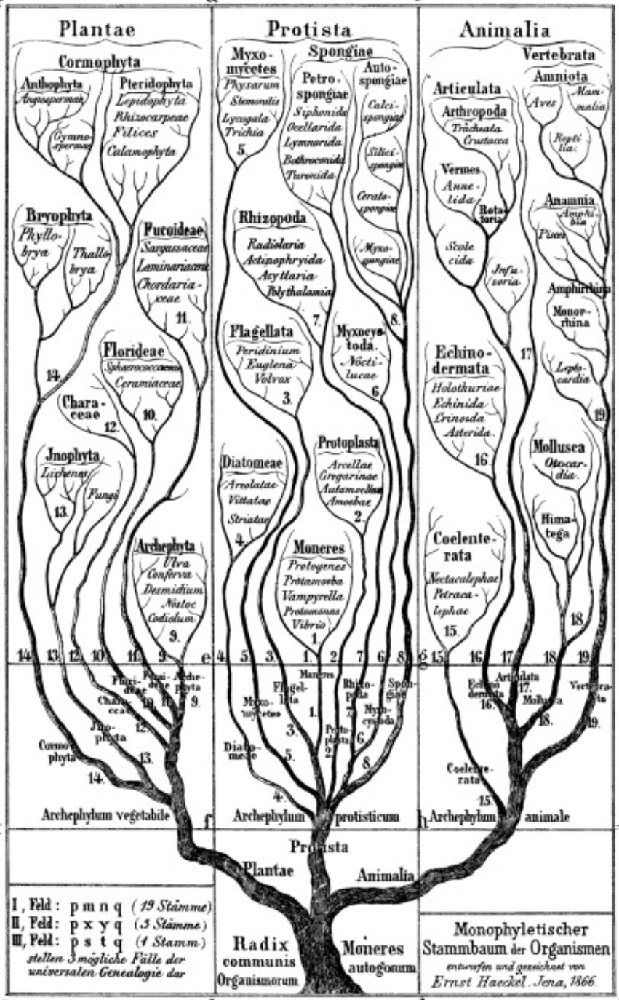
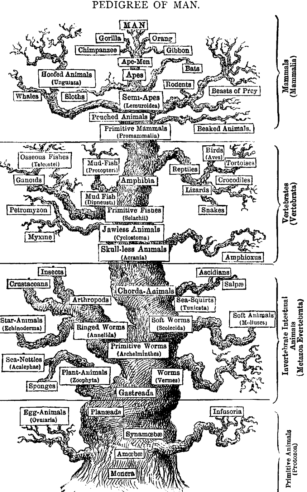
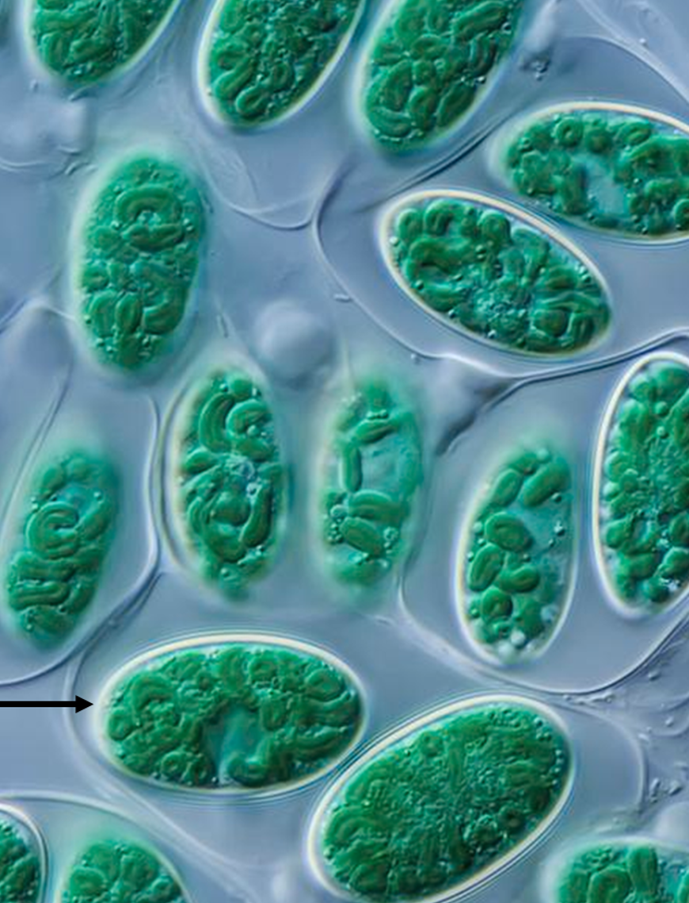

Protist diversity
Daniel Vaulot and Adriana Lopes dos Santos
2023-01-17


Outline
Eukaryote phylogeny before the molecular era - a brief history
Eukaryote phylogeny in the molecular era - 2000s
Supergroups
- Amorphea – Opisthokonts and Amoebozoa
- Orphan Taxa – Metamonada and Discoba
- Archaeplastida – Glaucophytes and Rhodophyta
- Haptista – Centrohelida, Rappemonads and Haptophytes
- TSAR – The secret rulers of our world
Phylogenetic diversity
Cell forms, apparatus and lifestyle diversity
Eukaryote phylogeny before the molecular era - a brief history
Darwin tree of life
Since the end of the 19th century, we know that the observed diversity of life reflects the evolutionary history of the organisms
Haeckel

Haeckel
Generelle Morphologie der Organismen - 1866

- Ernst Haeckel believed that the “natural system”, proposed by Darwin (1859), should be represented as a genealogical tree.
- Haeckel’s book Generelle Morphologie der Organismen (1866) provided major improvements to the theory of descent, including:
- a large vocabulary of neologisms, some of which became successful, such as phylogeny, monophyletic, and polyphyletic
- the term protists (“the first of all or primordial”) to distinguish unicellular organisms
Haeckel
Pedigree of man - 1874

Based on the characteristic of eight different main organs (muscles, nerves, coelom, genital organs, etc.) Haeckel proposed the name Metazoa (today used to describe multicellular animals).
He used phylogeny to establish series of ancestral morphological characters.
Five kingdoms
Whittaker - 19691
Recognition of the distinction between bacteria and protists, and between plants and fungi.
Classification based on morphology and nutrition style.
Ultrastructural data
- Hypotheses of relationships among unicellular eukaryotes emerged in 60s from ultrastructural data (electron microscopy). Some would be corroborated a few years later by molecular data
Examples
Presence of alveoli (membrane bond sacs that form a continuous layer under the plasma membrane) in Alveolates lineage (ciliates,dinoflagellates and apicomplexans).
Presence of tripartite tubular hairs (straminipilous) in Stramenopiles lineage (bicosoecids, labyrinthulids, oomycetes, diatoms, brown algae, silicoflagellates
Eukaryote phylogeny in the molecular era - super groups
Molecular phylogeny
- With the advent of molecular phylogeny came high hopes to quickly resolve eukaryote relationships
- 18S rRNA gene became the first golden standard for eukaryote phylogeny. Significant hypotheses were confirmed / revealed for the first time:
- Most protists groups identified by morphology and physiology do not represent evolutionarily coherent entities.
- Algae, protozoa, protists are names without taxonomic value. They do not represent any evolutionary relationship among the organisms.
- Fungi were shown to be more closely related to animals than to plants (“opisthokonts”)
- Some lineages stablished based on of ultrastructural data (alveolates and stramenopiles) were confirmed
Baldauf’s tree
- In 2000, Sandra (“Sandie”) Baldauf’s1 divided all of known eukaryotes into eight major taxonomic groups usually referred to as ‘supergroups’.
- Supergroups represent a set of eukaryotic species for which there are reasonable evidence that they form a monophyletic group.
- The supergroup model for the eToL became widely popular in both the primary literature and textbooks.
- The model represents an efficient summary of eukaryotic lineages.
The tree in 20201
- Most of supergroups have at least one distinctive biological characteristic that seems to define them ancestrally2.
- The precise number and membership of the supergroups has varied, reflecting the rapid pace with which important taxa are being discovered and added to tree (broad molecular phylogenetic analyses).
Amorphea
Amorphea
Opisthokonts - Fungi (Holomycota or Nucletmycea)
Amorphea
Opisthokonts - Holozoa (Animals)
- Ichtyosporea (parasites)
- Sister groups of Metazoa, Choanoflagellates, share a common ancestor with animals and may hold clues to how early animals evolve (multicellularity).
Amorphea
Amoebozoa
- Amoebozoa include:
- free-living amoeboid forms with lobose pseudopodia (tubular, finger shape)
- filose amoebae
- flagellates
- various slime molds.
- Abundant in soils
Amorphea
Amoebozoa - Testate amoebae
Testate Amoeba with algae symbionts play a very important role in nutrient cycling in peat bogs
Amorphea
Amoebozoa - Slime molds
- Slime molds are not fungi.
- They are enormous single cells with thousands of nuclei.
- They are formed when individual flagellated cells swarm together and fuse.
Amorphea
Amoebozoa - Slime molds
Orphan taxa
Orphan taxa - Metamonada
Metamonada entirely comprises anaerobic protists, including various free-living flagellates, intestinal symbionts (especially of wood-eating insects), and many parasites (e.g., Giardia, Trichomonas).
Orphan taxa - Metamonada
- Monocercomonoides sp, a protist isolated from the guts of Chinchilla has been reported as first eukaryotic cell that never had a mitochondria (2016).
- Support the hypothesis that the nuclei might have appeared before the acquisition of mitochondria.
Orphan taxa - Discoba
Euglenoids
- Ubiquitous flagellates especially common in terrestrial systems.
- Covered with rigid pellicle allowing euglenoid specific motion (metaboly).
- Secondary endosymbiosis with chlorophyta alga (Euglena, Phacus)
Orphan taxa - Discoba
Euglenoids
Orphan taxa - Discoba
Kinetoplastids
- Ubiquitous flagellates.
- Free living: Bodo
- Parasitic: Trypanosoma, Leishmania
Orphan taxa - Discoba
Symbiotids
- Anaerobic deep sea microbial eukaryotes
- Sulfur or sulfide-oxidizing epsilon proteobacteria epibionts
Archaeplastida
Archaeplastida
Primary endosymbiosis
- The first one occurred ~1.6 billion years ago and gave rise to glaucophytes, red algae and green algae (the ancestors of all plants).
- The second one occurred ~90–140 million years ago, establishing a permanent photosynthetic compartment (the chromatophore) in amoebae in the genus Paulinella.
Archaeplastida
Glaucophytes

- Tiny group, only 9 genera and about 15 species.
- Freshwater and terrestrial environments
- Contain blue-green plastids often called cyanelles
- Contain two types of phycobilins
- Phycobilins occur in phycobilisomes on the surface of thylakoids (like in cyanobacteria)
- Thylakoids are not stacked
Archaeplastida
Rhodophytes (Red algae)
- Mostly multicellular (but unicellular forms too).
- ~ 700 genera described with more than 5000 species described.
- 98% marine.
- Contain phycobiliproteins (phycoerythrin) that masks the green color of the Chlorophyll.
- Diversity of unicellular red algae has been underappreciated, both in their taxonomic classification and the number of genera described.
Archaeplastida
Chloroplastida/Viridiplantae
- Two evolutionary branches:
- Chlorophyta (which dominated Proterozoic oceans): form a large and morphologically diverse clade of marine, freshwater and terrestrial green algae.
- Streptophyta: include a paraphyletic assemblage of green algae (charophytes) and the land plants
- One of the main groups of photosynthetic eukaryotes
Cryptista
Cryptista
Katablepharids
Katablepharids1 and Palpitomonas are both enigmatic heterotrophic flagellates recently (~2010) discovered.
Cryptista
Cyptophytes
- Cryptophytes have been central to the study of secondary origin of Chloroplasts.
- Cryptophytes plastids (red algal origin) is surrounded by four membranes; presence of a nucleomorph (NM) = residual nucleus of the red algal endosymbiont.
- They are ubiquitous in marine, brackish, and freshwater habitats.
- Mostly photosynthetic with some mixotrophic species
- Because they produce PUFA are used as food for copepods in fish farming.
- Chloroplast contains phycobiliprotein (phycoerythrin).
Haptista
Haptista
- Haptista are characterized by the haptonema, a third appendage used for attachment and food handling.
- Three groups:
- Haptophytes
- Centrohelida
- Rappemonads
Haptista
Centrohelida
- Heterotrophic, free-living species that are found in most aquatic benthic environments where they feed on bacteria and other protists, including algae.
- Found primarily in freshwater but have also been observed in brackish or marine water in the euphotic zone.
- Some cells have organic spicules and siliceous scales.
- Cells possess ray-like projections called axopodia covered in a sticky mucilage to trap prey.
Haptista
Rappemonads
- Was identified as a new group in 1998 based on rRNA sequences (plastid 16S rRNA).
- Morphology remained unknown until 2021.
- A strain (NIES-3900) established in 1991 from a sample obtained at a seaport in Japan turned out to match the environmental sequences.
Haptista
Haptophyta

- Predominantly planktonic and phototrophic.
- Some cells are covered of calcified plates, the coccoliths.
- Marine environments worldwide.
- Major component of the marine microbial ecosystem.
- Play a significant role in the global carbonate cycle through photosynthesis and calcification
Haptista
Haptophyta
- Blooms of Calcihaptophycidae can be seen from space. The turquoise color is a result of the light getting scattered by their calcium carbonate coccoliths (scales)
- Diversified in the Mesozoic to become a significant component of the phytoplankton (todays evidence white cliff of Dover).
TSAR - The secret rulers of the world
TSAR
The secret rulers of the world
- It is a gigantic assemblage of eukaryote lineages and possibly a rival to Opisthokonta in diversity
- It includes:
- major groups of microbial algae (e.g., diatoms, dinoflagellates),
- large seaweeds (e.g., kelps),
- ecologically important free-living heterotrophic microbial eukaryotes (e.g., ciliates, foraminiferans, radiolarians),
- many well-studied parasites (e.g., apicomplexans, oomycetes)
TSAR
Rhizaria - Foraminifera
- More than 12.000 species.
- Mostly benthic.
- Several live in symbiosis with the dinoflagellates Symbiodinium (same found in corals).
- Main group with microfossil record.
TSAR
Rhizaria - Radiolaria
- The favorite protists of artists
- Great carbon sinkers
TSAR
Stramenopiles
- Major clade supported by both molecular and morphological data (flagella with tripartite tubular hair – mastigonemes)
- Diatoms and brown algae are the best-known members of Stramenopiles, but the group also comprises heterotrophic protists, including parasites / commensals of plants & animals and lineages known only from environmental DNA.
TSAR
Stramenopiles - Diatoms
- The jewels of the sea
- Enclosed in a siliceous frustule
- Heterokont flagella present during sexual reproduction
- 250 genera, > 10,000 species
- ~ 20% of the phytoplankton primary production
Alveolata
Secondary endosymbiosis
- Apicomplexa: derived non-photosynthetic plastid called apicomplast.
- Ciliates: multiple genes of apparent algal origin present in the macronuclei.
Alveolata
Ciliophora
- More than 8000 described species
- Nnuclear dualism:
- Micronucleus (2N, “germ line”)
- Macronucleus (> 2N, “somatic line”)
- Macronucleus polyploid and undergo direct division without mitosis. It controls the non-reproductive cell functions, such as metabolism.
- Sexual reproduction by “conjugation”
- Cilia covering most of the cell, sometimes arranged in dense patches (e.g. cirri)
- Perfectly adapted to life in soil / sediments, but also present in the plankton (e.g. tintinnids)
- All heterotrophic species (kleptoplasty of cryptophytes)
Alveolata
Ciliophora - Tintinnids
- Form a lorica with debris
- They feed primarily on photosynthetic algae and bacteria.
- They are an important part of the fossil record.
Alveolata
Apicomplexa

Very successful group of Endoparasites or endocommensals of animals, from corals to humans.
- Coccidiomorphea: contain well known vertebrate parasites like Plasmodium (malaria) and Toxoplasma which means that these parasites evolved from free leaving algae!
- Gregarinomorphea: contain mostly invertebrate parasites.
Alveolata
Dinophyta
- Atypical nucleus (dinokaryon) with high DNA content and permanently condensed chromosomes.
- 550 genera with > 2000 species (~ 50% photosynthetic)
- Athecate (naked) or Thecate (cellulose wall)
- Many cases of plastid loss (and re-acquisitions from various donors: haptophytes, chlorophytes, cryptophytes by kleptoplastidy)